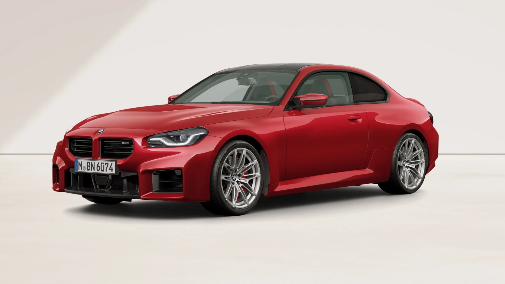

BMW 220i Coupé
Od 1 237 600 Kč
Konfigurovat- Zážehový čtyřválec BMW TwinPower Turbo, 1 998 cm³
- Výkon 135 kW (184 k), točivý moment 300 Nm
- 0–100 km/h za 7,5 s, max. rychlost 236 km/h
- 8stupňová automatická převodovka Steptronic
- Pohon zadních kol
- Spotřeba 6,7–6,4 l/100 km (WLTP)